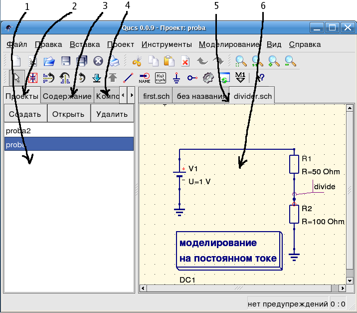

- Qucs -
Почти универсальный симулятор цепей
Быстрый старт в
аналоговом моделировании
Qucs (произносится: kju:ks) - симулятор цепей с графическим пользовательским интерфейсом.
Он способен выполнять различные виды моделирования (например, на постоянном токе,
S-параметров и т.д.). Этот документ дает краткое описание того, как пользоваться Qucs.
При первом запуске Qucs создает папку ".qucs" в Вашей домашней папке. Каждый файл
сохраняется в этой папке или в одной из ее подпапок. После загрузки Qucs показывается
главное окно, которое выглядит примерно как на рис.1. С правой стороны расположена
рабочая область (6), в которой содержатся схемы, документы показа данных и т.д..
С помощью вкладок (5) над этой областью можно быстро переключиться на любой документ,
открытый в данный момент. С левой стороны главного окна Qucs находится еще одна
область (1), содержание которой зависит от состояния вкладок, расположенных над ней:
"Проекты" (2), "Содержание" (3) и "Компоненты" (4). После запуска Qucs активируется
вкладка "Проекты" (2). Так как Вы запустили программу в первый раз, эта область
пустая, поскольку у Вас еще нет ни одного проекта. Нажмите кнопку "Создать" прямо
над областью (1) и откроется диалоговое окно. Введите имя для Вашего первого проекта,
например, "firstProject" и нажмите кнопку "Создать". Qucs создает папку проекта в
папке ~/.qucs, для этого примера "firstProject_prj". Каждый файл, принадлежащий этому
новому проекту, будет сохранен в этой папке. Новый проект немедленно открывается
(это можно прочитать в заголовке окна) и вкладки переключаются на "Содержание" (3),
где показывается содержание открытого в данный момент проекта. У Вас еще нет ни одного
документа, поэтому нажмите кнопку сохранения на панели инструментов (или используйте
главное меню: Файл->Сохранить) чтобы сохранить документ без названия, который заполняет
рабочую область (6). После этого появится диалоговое окно для ввода имени нового документа.
Введите "firstSchematic" и нажмите кнопку "Сохранить".

Рис. 1 - Главное окно Qucs
Теперь нам нужно сделать простое моделирование на постоянном токе, то есть мы хотим
проанализировать схему на рис. 1. Выберите вкладку "Компоненты" ( (4) на рис. 1).
Там Вы увидите выпадающий список, в котором можно выбрать группу компонентов и,
ниже, компоненты выбранной группы. Выберите "дискретные компоненты" и нажмите на
первый символ: "Резистор". Перемещая курсор мыши в рабочую область (6), Вы переносите
рисунок обозначения резистора. Нажатие правой кнопки мыши вращает обозначение,
нажатие левой кнопки мыши помещает компонент на схему. Повторите этот процесс
для всех компонентов, показанных на рис. 1. Источник напряжения может быть найден
в классе компонентов "источники", обозначение заземления может быть взято из
класса "дискретные компоненты" или с панели инструментов, требуемое моделирование
определяется с помощью больших блоков моделирования, находящихся в классе компонентов
"виды моделирования". Чтобы изменить параметры второго резистора, сделайте двойное
нажатие левой кнопки мыши на нем. Откроется диалоговое окно, где можно изменить
сопротивление. Введите "100 Ohm" в поле редактирования справа и нажмите Enter.
Чтобы соединить компоненты, нажмите кнопку с проводником на панели инструментов
(или воспользуйтесь главным меню: Вставка->Проводник). Переместите курсор на незанятый
вывод (помеченный маленьким красным кружком). Нажатие кнопки мыши на нем начинает
проводник. Теперь передвиньте курсор к конечной точке и снова нажите кнопку мыши.
Теперь компоненты соединены. Если Вы хотите изменить направление изгиба проводника,
нажмите правую кнопку мыши, прежде чем делать конечную точку. Вы можете также закончить
проводник, не нажимая ни на свободный вывод, ни на проводник: просто сделайте двойное
нажатие левой кнопки мыши.
Наконец, очень важно пометить узел, в котором Вы хотите, чтобы Qucs рассчитал напряжение.
Нажмите на панели инструментов кнопку для метки проводника (или воспользуйтесь меню:
Вставка->Метка проводника). Теперь нажмите кнопку мыши на выбранном проводнике.
Откроется диалоговое окно и можно ввести имя узла. Напишите "divide" и нажмите кнопку "Ok".
Теперь схема должна выглядеть как на рис. 1.
Для запуска моделирования нажмите кнопку моделирования на панели инструментов (или
используйте меню: Моделирование->Моделировать). Откроется окно и покажет продвижение
процесса. После успешного завершения моделирования открывается документ показа данных.
Обычно все это происходит так быстро, что Вы увидите лишь быстрое мелькание. Теперь Вам
нужно поместить диаграмму, чтобы увидеть результаты моделирования. Слева находится класс
компонентов "диаграммы", который выбирается автоматически. Нажмите на "Табличная",
перейдите в рабочую область и поместите ее, нажав левую кнопку мыши. Открывается
диалоговое окно, где можно выбрать, что следует показать в новой диаграмме. В левой
области видно имя узла, которое Вы задали: "divide". Сделайте двойное нажатие кнопки
мыши на нем, и оно будет перенесено в правую область. Выйдите из диалога нажатием
кнопки "Ok". Теперь виден результат моделирования: 0.666667 вольт. Замечательно,
похлопайте себя по плечу!
наверх